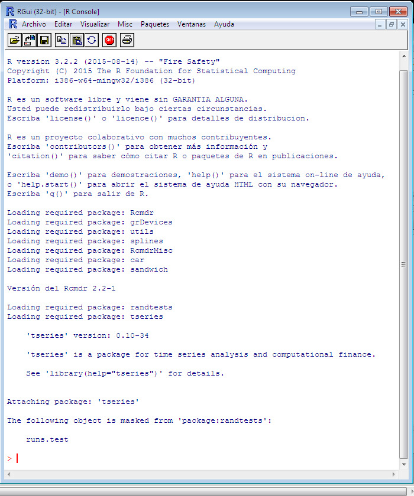
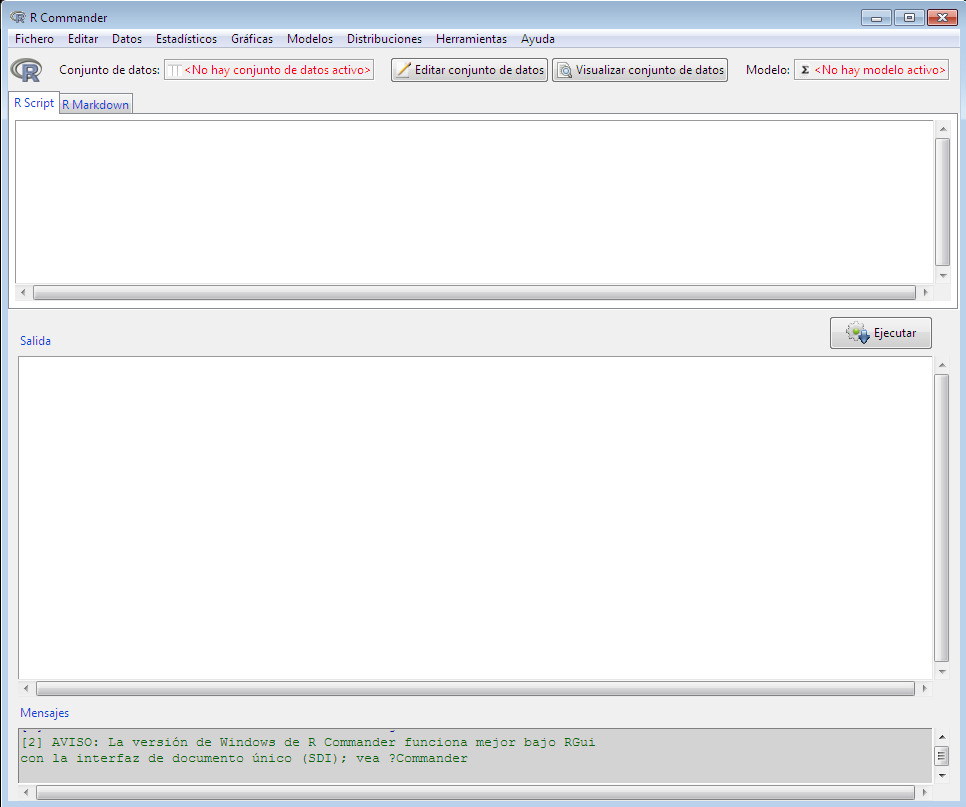

Fig. 1: Ventana de la consola R después de cargar el paquete Rcmdr.

Fig. 2: Ventana de R Commander al inicio
Once R is running, simply loading the Rcmdr package by typing the command library(Rcmdr) into the R Console starts the R Commander graphical user interface. To function optimally under Windows, the R Commander prefers the single-document interface («SDI») to RUna vez que R está en ejecución, al cargar el paquete Rcmdr simplemente escribiendo el comando library(Rcmdr) en la Consola R se inicia la interfaz gráfica de usuario de R Commander. Para funcionar de manera óptima bajo Windows, R Commander prefiere la interfaz de documento único («SDI») de R.1The Windows version of R is normally run from a multiple-document interface («MDI»), which contains the R Console window, Graphical Device windows created during the session, and other windows related to the R process. In contrast, under the single-document interface («SDI»), the R Console and Graphical Device windows are not contained within a master window. There are several ways to run R in SDI mode, for example, by selecting the SDI when R is installed, by editing the Rconsole file in R‘s etc subdirectory, or by adding –sdi to the Target field in the Shortcut tab of the R desktop icon’s Properties. You should be able to use the R Commander with the MDI, but it will not appear within the master R window and arranging the screen will be inconvenient.La versión de Windows de R normalmente se ejecuta desde una interfaz de documentos múltiples («MDI»), la cual contiene la ventana de la Consola R, las ventanas del Dispositivo Gráfico creadas durante la sesión y otras ventanas relacionadas con el proceso de R. Por el contrario, bajo la interfaz de documento único («SDI»), las ventanas de la Consola R y del Dispositivo Gráfico no están contenidas dentro de una ventana principal. Existen varias formas de ejecutar R en modo SDI, por ejemplo, seleccionando SDI cuando se instala R, editando el archivo Rconsole en el subdirectorio etc de R, o añadiendo –sdi al campo Destino en la pestaña Acceso directo de las Propiedades del icono de escritorio de R. Debería poder utilizar R Commander con la MDI, pero no aparecerá dentro de la ventana principal de R y organizar la pantalla resultará incómodo.After loading the package, R Console and R Commander windows should appear more or less as in Figures 1 and 2.Tras cargar el paquete, las ventanas de la Consola R y de R Commander deberían aparecer más o menos como en las Figuras 1 y 2.2Most of the «screen-shots» in this document were produced with an earlier version of R and the R Commander. Screen images were only updated when their appearance or content has changed.La mayoría de las «capturas de pantalla» de este documento se realizaron con una versión anterior de R y de R Commander. Las capturas de pantalla solo se actualizaron cuando cambió su aspecto o su contenido.These and other screen images in this document were created under Windows 7 and 10; if you use another version of Windows (or, of course, another computing platform), then the appearance of the screen may differ.Estas y otras imágenes de pantalla de este documento fueron creadas bajo Windows 7 y 10; si utiliza otra versión de Windows (o, por supuesto, otra plataforma informática), el aspecto de la pantalla puede diferir.3Notice that the R Commander requires some packages in addition to several of the «recommended» packages that are normally distributed with R. The Rcmdr package, the required packages, and many other contributed packages are available for download from the Comprehensive R Archive Network (CRAN) at https://cran.r-project.org/. If these packages are not installed, the R Commander will offer to install them from the internet or from local files (e.g., on a CD/ROM or USB flash drive). If you install the Rcmdr package via the Windows «R GUI» not all of the packages on which the Rcmdr package depends will be installed. You can install the Rcmdr package and all of the packages on which it depends via the install.packages function, setting the argument dependencies = TRUE, but because of recursive dependencies, that will install more packages than are strictly necessary for the R Commander to function. Thanks to Dirk Eddelbuettel, Debian Linux users need only issue the command $ apt-get install r-cran-rcmdr to install the Rcmdr package along with all of the packages that it requires. In any event, building and installing the Rcmdr package on Linux systems is typically straightforward. The task is a little more complicated under macOS, since the tcltk package on which the Rcmdr depends requires that X-Windows be installed — see the R Commander installation notes.Tenga en cuenta que R Commander requiere algunos paquetes además de varios de los paquetes «recomendados» que normalmente se distribuyen con R. El paquete Rcmdr, los paquetes requeridos y muchos otros paquetes aportados por la comunidad están disponibles para su descarga desde el Comprehensive R Archive Network (CRAN) en https://cran.r-project.org/. Si estos paquetes no están instalados, R Commander le ofrecerá instalarlos desde Internet o desde archivos locales (por ejemplo, desde un CD-ROM o una memoria USB). Si instala el paquete Rcmdr a través de la «GUI de R» de Windows, no se instalarán todos los paquetes de los que depende el paquete Rcmdr. Puede instalar el paquete Rcmdr y todos los paquetes de los que depende mediante la función install.packages, estableciendo el argumento dependencies = TRUE, pero debido a las dependencias recursivas, esto instalará más paquetes de los estrictamente necesarios para que R Commander funcione. Gracias a Dirk Eddelbuettel, los usuarios de Debian Linux solo necesitan ejecutar el comando $ apt-get install r-cran-rcmdr para instalar el paquete Rcmdr junto con todos los paquetes que requiere. En cualquier caso, compilar e instalar el paquete Rcmdr en sistemas Linux suele ser un proceso sencillo. La tarea es un poco más complicada en macOS, ya que el paquete tcltk del que depende Rcmdr requiere que X-Windows esté instalado — consulte las notas de instalación de R Commander.The R Commander and R Console windows float freely on the desktop. You will normally use the R Commander‘s menus and dialog boxes to read, manipulate, and analyze data, and you can safely minimize the R Console window.Las ventanas de R Commander y de la Consola R flotan libremente en el escritorio. Normalmente utilizará los menús y cuadros de diálogo de R Commander para leer, manipular y analizar datos, y puede minimizar de forma segura la ventana de la Consola R.
- R commands generated by the R Commander GUI appear in the R Script tab in the upper pane of the main R Commander window. You can also type R commands directly into the script pane;Los comandos de R generados por la GUI de R Commander aparecen en la pestaña Script R del panel superior de la ventana principal de R Commander. También puede escribir comandos de R directamente en el panel de script;4You can also type commands at the
$>$(greater-than) prompt in the R Console, but output generated by these commands will not appear in the R Commander Output pane and error and warning messages will normally not be visible.También puede escribir comandos en la señal de inicio (prompt)$>$(mayor que) de la Consola R, pero el resultado generado por estos comandos no aparecerá en el panel de Salida de R Commander y los mensajes de error y de advertencia normalmente no serán visibles. the main purpose of the R Commander, however, is to avoid having to type commands. The second tab in the upper pane (labelled R Markdown) also accumulates the commands produced by the R Commander and can be used to generate printed reports; the R Markdown tab is described in Section Producing Reports.sin embargo, el propósito principal de R Commander es evitar tener que escribir comandos. La segunda pestaña del panel superior (etiquetada como R Markdown) también acumula los comandos producidos por R Commander y se puede utilizar para generar informes impresos; la pestaña R Markdown se describe en la Sección Generación de informes. - Printed output appears by default in the second pane (labelled Output).La salida impresa aparece de forma predeterminada en el segundo panel (etiquetado como Salida).
- The lower, gray pane (labelled Messages) displays error messages, warnings, and some other information («notes»), such as the start-up message in Figure 2.El panel inferior de color gris (etiquetado como Mensajes) muestra mensajes de error, advertencias y alguna otra información («notas»), como el mensaje de inicio en la Figura 2.
- When you create graphs, these will appear in a separate Graphics Device window.Cuando cree gráficos, estos aparecerán en una ventana independiente del Dispositivo gráfico (Graphics Device).
There are several menus along the top of the R Commander window:En la parte superior de la ventana de R Commander hay varios menús:
- File: Menu items for loading and saving script files; for saving output and the R workspace; and for exiting.Archivo: Elementos de menú para cargar y guardar archivos de script; para guardar la salida y el espacio de trabajo de R; y para salir.
- Edit: Menu items (Cut, Copy, Paste, etc.) for editing text in the various panes and tabs. Right-clicking in one of these panes or tabs also brings up an edit «context» menu.Edición: Elementos de menú (Cortar, Copiar, Pegar, etc.) para editar texto en los distintos paneles y pestañas. Al hacer clic con el botón derecho en uno de estos paneles o pestañas, también se despliega un menú «contextual» de edición.
- Data: Submenus containing menu items for reading and manipulating data.Datos: Submenús que contienen elementos de menú para leer y manipular datos.
- Statistics: Submenus containing menu items for a variety of statistical analyses.Estadística: Submenús que contienen elementos de menú para una gran variedad de análisis estadísticos.
- Graphs: Menu items for creating various statistical graphs.Gráficos: Elementos de menú para crear diversos gráficos estadísticos.
- Models: Menu items and submenus for obtaining numerical summaries, confidence intervals, hypothesis tests, diagnostics, and graphs for a statistical model, and for adding diagnostic quantities, such as residuals, to the data set.Modelos: Elementos de menú y submenús para obtener resúmenes numéricos, intervalos de confianza, contrastes de hipótesis, diagnósticos y gráficos para un modelo estadístico, y para añadir magnitudes de diagnóstico, como los residuos, al conjunto de datos.
- Distributions: Submenus to obtain cumulative probabilities, probability densities or masses, quantiles, and graphs of standard statistical distributions (to be used, for example, as a substitute for statistical tables), and to generate samples from these distributions.Distribuciones: Submenús para obtener probabilidades acumuladas, densidades o masas de probabilidad, cuantiles y gráficos de distribuciones estadísticas estándar (para ser utilizados, por ejemplo, como sustituto de las tablas estadísticas), y para generar muestras a partir de estas distribuciones.
- Tools: Menu items for loading R packages unrelated to the Rcmdr package (e.g., to access data saved in another package); for loading Rcmdr plug-in packages (see [1], [2], [3], and Section Using R Commander Plug-ins); for setting most R Commander options and for saving options so that they will be applied in subsequent sessions; and for installing optional auxiliary software (see Section Producing Reports).Herramientas: Elementos de menú para cargar paquetes de R no relacionados con el paquete Rcmdr (p. ej., para acceder a datos guardados en otro paquete); para cargar paquetes de complementos (plug-ins) de Rcmdr (consulte [1], [2], [3] y la Sección Uso de complementos de R Commander); para configurar la mayoría de las opciones de R Commander y guardarlas para que se apliquen en sesiones posteriores; y para instalar software auxiliar opcional (consulte la Sección Generación de informes).
- Help: Menu items to obtain information about the R Commander (including this manual) and associated software. As well, each R Commander dialog box has a Help button (see below).Ayuda: Elementos de menú para obtener información sobre R Commander (incluido este manual) y el software asociado. Asimismo, cada cuadro de diálogo de R Commander cuenta con un botón de Ayuda (véase más adelante).
The complete menu «tree» for the R Commander (version 2.8-0) is shown in Complete Menu Tree. Most menu items lead to dialog boxes, as illustrated later in this manual, and, as is conventional, such menu items are followed by ... Menu items are inactive («grayed out») if they are inapplicable to the current context. For example, if a data set contains no factors (categorical variables), the menu items for contingency tables will be inactive.El «árbol» completo de menús para R Commander (versión 2.8-0) se muestra en el Árbol de menús completo. La mayoría de los elementos de menú conducen a cuadros de diálogo, como se ilustra más adelante en este manual y, como es habitual, dichos elementos van seguidos de ... Los elementos de menú están inactivos («en gris») si no son aplicables al contexto actual. Por ejemplo, si un conjunto de datos no contiene factores (variables cualitativas o categóricas), los elementos de menú para tablas de contingencia estarán inactivos.5Some menu items may not be displayed in certain circumstances. For example, the knitr menu items in the File} menu will be displayed only if the knitr tab is activated, and the Install auxiliary software item in the Tools menu is activated only if the optional (LaTeX) or Pandoc software are missing. The menus also include dividers, which are not shown here.Algunos elementos de menú pueden no mostrarse en determinadas circunstancias. Por ejemplo, los elementos de menú de knitr en el menú Archivo solo se mostrarán si la pestaña knitr está activada, y el elemento Instalar software auxiliar en el menú Herramientas solo se activa si falta el software opcional (LaTeX) o Pandoc. Los menús también incluyen divisores, los cuales no se muestran aquí.
The R Commander interface includes a few elements in addition to menus and dialogs:La interfaz de R Commander incluye algunos elementos adicionales a los menús y cuadros de diálogo:
- Below the menus is a «toolbar» with a row of buttons.Debajo de los menús se encuentra una «barra de herramientas» con una fila de botones.
- The left-most (flat) button shows the name of the active data set. Initially there is no active data set. If you press this button, you will be able to choose among data sets currently in memory (if there is more than one). Most of the menus and dialogs in the R Commander reference the active data set. (The File, Edit, and Distributions menus are exceptions.)El botón plano situado más a la izquierda muestra el nombre del conjunto de datos activo. Inicialmente no hay ningún conjunto de datos activo. Si pulsa este botón, podrá elegir entre los conjuntos de datos que se encuentren actualmente en la memoria (si hay más de uno). La mayoría de los menús y cuadros de diálogo de R Commander hacen referencia al conjunto de datos activo. (Los menús Archivo, Edición y Distribuciones son excepciones).
- A flat button indicates the name of the active statistical model — a linear model (such as a linear-regression model), a generalized linear model, a multinomial logit model, an ordinal regression model, or a linear or generalized linear mixed-effects model.Un botón plano indica el nombre del modelo estadístico activo: un modelo lineal (como un modelo de regresión lineal), un modelo lineal generalizado, un modelo logit multinomial, un modelo de regresión ordinal o un modelo lineal o lineal generalizado de efectos mixtos.6R Commander plug-in packages ([1]; [2]; [3]) may provide additional classes of models.Los paquetes de complementos (plug-ins) de R Commander ([1]; [2]; [3]) pueden proporcionar clases adicionales de modelos. Initially there is no active model. If there is more than one model in memory associated with the active data set, you can choose among the models by pressing the button. The R Commander synchronizes models and the data sets to which they are fit.Inicialmente no hay ningún modelo activo. Si hay más de un modelo en la memoria asociado con el conjunto de datos activo, puede elegir entre los modelos pulsando el botón. R Commander sincroniza los modelos y los conjuntos de datos a los que están ajustados.
- Immediately below the toolbar is a pane containing the R Script tab, a large scrollable text window. As mentioned, commands generated by the R Commander are copied into this window. You can edit the text in the Script tab or even type your own R commands into the window. Pressing the Submit button, which is at the right below the Script tab (or, alternatively, the key combination Ctrl-r,Inmediatamente debajo de la barra de herramientas se encuentra un panel que contiene la pestaña R Script, una ventana de texto grande con desplazamiento. Como se ha mencionado, los comandos generados por R Commander se copian en esta ventana. Puede editar el texto en la pestaña Script o incluso escribir sus propios comandos de R en la ventana. Al pulsar el botón Ejecutar, que se encuentra a la derecha debajo de la pestaña Script (o, alternativamente, la combinación de teclas Control-r,7That is, hold down the Ctrl (or Control) key and simultaneously press the r key. On macOS you can usually substitute the Command key for the Control key, both here and more generally, but Control key combinations can be used as well.Es decir, mantenga pulsada la tecla Control (o Ctrl) y pulse simultáneamente la tecla r. En macOS por lo general puede sustituir la tecla Control por la tecla Comando, tanto aquí como de forma más general, aunque también se pueden utilizar las combinaciones con la tecla Control.for «run», or Ctrl-Tab), causes the line containing the cursor to be submitted (or resubmitted) for execution. If several lines are selected (e.g., by left-clicking and dragging the mouse over them), then pressing Submit will cause all of them to be executed. Commands entered into the R Script tab can extend over more than one line, but all lines must be submitted simultaneously. The key combination Ctrl-a selects all of the text in the Script tab, and Ctrl-s brings up a dialog box to save the contents of the tab. The R Markdown tab is described in Section Producing Reports.por «run» (ejecutar), o Control-Tab), se envía (o reenvía) para su ejecución la línea donde se encuentra el cursor. Si se seleccionan varias líneas (p. ej., haciendo clic con el botón izquierdo del ratón y arrastrándolo sobre ellas), al pulsar Ejecutar se ejecutarán todas ellas. Los comandos introducidos en la pestaña R Script pueden incluir más de una línea, pero todas las líneas deben enviarse simultáneamente. La combinación de teclas Control-a selecciona todo el texto de la pestaña Script, y Control-s abre un cuadro de diálogo para guardar el contenido de la pestaña. La pestaña R Markdown se describe en la Sección Generación de informes.
- Below the R Script and R Markdown tabs is a pane containing a large scrollable and editable text window for Output. Commands echoed to the Output pane appear in red, the resulting output in dark blue (as in the standard Windows R Console).Debajo de las pestañas R Script y R Markdown se encuentra un panel que contiene una ventana de texto grande, editable y con desplazamiento para la Salida. Los comandos mostrados en el panel de Salida aparecen en rojo y el resultado obtenido en azul oscuro (como en la Consola de R estándar de Windows).
- At the bottom is a small gray pane for Messages. Error messages are displayed in red text, warnings in green, and other messages in dark blue. Errors and warnings also provide an audible cue by ringing a bell.En la parte inferior se encuentra un pequeño panel gris para los Mensajes. Los mensajes de error se muestran en texto rojo, las advertencias en verde y otros mensajes en azul oscuro. Los errores y las advertencias también emiten una señal sonora mediante una alarma acústica.
As mentioned, once you have loaded the Rcmdr package, you can minimize the R Console. The R Commander window can also be resized or maximized in the normal manner. If you resize the R Commander, the width of subsequent R output is automatically adjusted to fit the Output pane.Como se ha mencionado, una vez cargado el paquete Rcmdr, puede minimizar la Consola de R. La ventana de R Commander también se puede redimensionar o maximizar de la manera habitual. Si redimensiona R Commander, el ancho de las salidas posteriores de R se ajustará automáticamente para adaptarse al panel de Salida.
The R Commander is highly configurable: I have described the default configuration here. Changes to the configuration can be made via the Tools -> Options… menu, or, more extensively, by setting R Commander options in R.R Commander es altamente configurable: aquí se describe la configuración predeterminada. Los cambios en la configuración se pueden realizar a través del menú Herramientas -> Opciones… o, de forma más exhaustiva, estableciendo las opciones de R Commander en R.8A menu item that terminates in ellipses (i.e., three dots, …) leads to a dialog box; this is a standard GUI convention. In this document, -> represents selecting a menu item or submenu from a menu.Un elemento de menú que termina en puntos suspensivos (es decir, tres puntos, …) conduce a un cuadro de diálogo; esta es una convención estándar de las GUI. En este documento, -> representa la selección de un elemento de menú o submenú dentro de un menú. See Help -> Commander help for details.Consulte Ayuda -> Ayuda de Commander para obtener más detalles.
- J. Fox, Using the R Commander: A Point-And-Click Interface for R. Taylor & Francis Group, 2016.
- J. Fox, “Extending the R Commander by ‘plug-in’ packages”, R News, vol. 7, no. 3, pp. 46–52, 2007.
- J. Fox and M. Sá Carvalho, “The RcmdrPlugin.survival package: Extending the R Commander to survival analysis”, Journal of Statistical Software, vol. 49, no. 7, pp. 1–32, 2012.